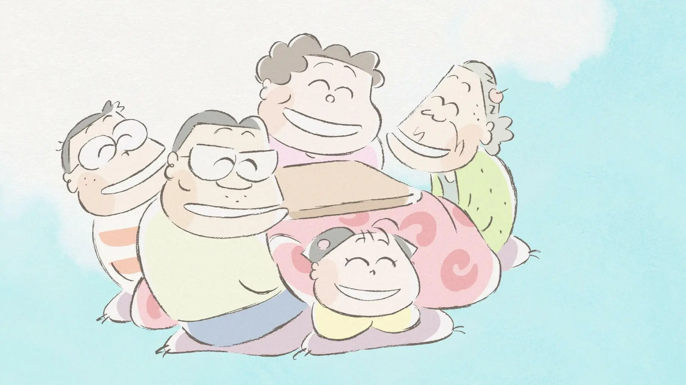

My Neighbors the Yamadasホーホケキョ となりの山田くん (Hōhokekyo tonari no Yamada-kun)Release Year1999DirectorIsao TakahataProducerToshio SuzukiRunning Time104 minsRT Score⭐ 75%The Yamadas are a typical middle class Japanese family in urban Tokyo and this film shows us a variety of episodes of their lives. With tales that range from the humourous to the heartbreaking, we see this family cope with life's little conflicts, problems and joys in their own way.Characters (0)No character information available for this film.Additional InformationLocations (0)NoneSpecies (1)HumanVehicles (0)None